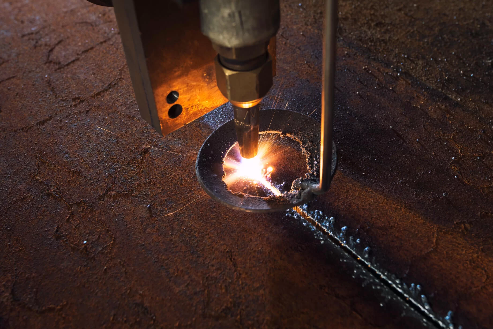
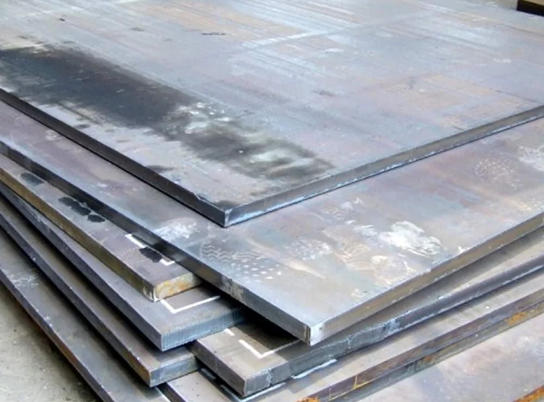

Впервые заказывая лестницу на металлическом каркасе, любой из нас выбирает из нескольких производителей:
кто будет надежнее, кто изготовит действительно хорошую лестницу и кто будет выгоден по цене. Расскажем
о своей компании «as it» - доступно, просто и от души.
Мы занимаемся конвейерным производством лестниц на оборудовании по последним технологиям и стандартам
ISO.
Что это означает? На базе нашего производства организован поточный процесс сборки металлокаркасов для
лестниц. Организация производственного процесса от начала производства и до окончания разделена на 6
этапов: таким образом мы увеличили мощность в 3 раза, что повлияло и на качество: скорость выросла в 4
раза, а точность выросла до 0,01 мм. Данный подход позволяет также на каждый этап выделить энное
количество человек, которые будут совершенны на отдельном этапе, а значит — не будут допускать ошибок
из-за отсутствия опыта или из-за занятости другими вопросами. При этом человеческий фактор сводится к
минимуму благодаря автоматизации всех процессов. Таким образом мы убиваем всех «зайцев», в том числе
снижаем стоимость расходов на производство, что гарантированно снижает цены для наших заказчиков.
ОТК (отдел технического контроля) постоянно выполняет свои прямые обязанности — проводит проверки
качества производимых конструкций на каждом этапе. Это дает нам преимущество перед другими компаниями,
так как количество проверок и их тщательность гарантирует нашим заказчикам высокое качество и отсутствие
брака.
Используемый нами подход дает заказчику реальные сроки изготовления заказа и гарантирует высокое
качество всех готовых лестниц. Все наши работы соответствуют требованиям ГОСТ и СНиП, имеют нужные
лицензии и сертификаты.
Наши преимущества
Отличная переносимость климатических изменений
Отличая устойчивость к любым погодным факторам
Долговечность и надежность
Относительная дешевизна материала
Отличная переносимость климатических изменений
Отличая устойчивость к любым погодным факторам
Долговечность и надежность
Относительная дешевизна материала
Наше производство оснащено самым современным оборудованием, особенно хочется выделить наш
высокопроизводительный лазерный станок для резки металла немецкого производства. Точность резки на
станке лазерной резки - 0,001мм. Никаких погрешностей, все точно, а значит — надежно и выверено.
Некоторые компании «заманивают» заказчиков тем, что «мы единственные используем лазерный станок» - это
неправда. "Лестницы-на-металле" базируются в Санкт-Петербурге и наши лестницы производятся с применением
лазерного станка. Кстати, мы можем показать его на экскурсии.
Также нашим клиентам будет интересна собственная камера для порошковой окраски: окрашиваем любые детали
в выбранный цвет, используем только качественную краску и гарантируем, что данный тип покраски в 7 раз
надежнее и долговечнее, нежели ручные и иные методы, которые предлагают в других компаниях. Подробнее о
нашей порошковой окраске вы прочтете здесь.

У нас работаю специалисты с опытом изготовления лестниц в 3500 этажей.
6 лет наша команда слесарей, сварщиков, монтажников и т.д занимает производством металлических каркасов,
обшивкой и установкой уличных и внутренних лестниц Благодаря нашему общему опыту и слаженной работе наши
сотрудники уверены в своих силах, знают сое дело на 100% и выполнят поставленную задачу в срок и
качественно.
Наши сотрудники в течение года проходят обязательные курсы или мастер-классы по повышению квалификации,
обучению новым технологиям и многое другое. Так мы держим руку на пульс любых нововведений в области
производства. Инструменты и станки всегда находятся в надлежащем техническом состоянии и по мере
актуальности мы закупаем новое оборудование. Если Вам нужно заказать лестницу на металлокаркасе в СПб,
то обращайтесь в нашу компанию.
Используемые в производстве материалы
Нержавеющая сталь
Небольшая масса, высокая прочность, надежность, высокая долговечность, устойчивость к
ржавчине.
Железо
Дает возможность получить прочную, долговечную и надежную конструкцию. Если не окрашивать,
то
вероятно появление ржавчины и ухудшение свойств.

Любая заказанная у нас лестница будет радовать вас и не принесет хлопот.
Наши лестницы поистине практичны, в доступной ценовой категории, надежны, долговечны и выполнены
профессионалами с любовью к своему делу.
Мы сертифицированный производитель лестниц на металлокаркасе в Санкт-Петербурге и Ленинградской области.
Обращайтесь к нам и вы получите бесценный опыт сотрудничества с профи в своем деле, а для постоянных
клиентов у нас предусмотрена гибкая система скидок!